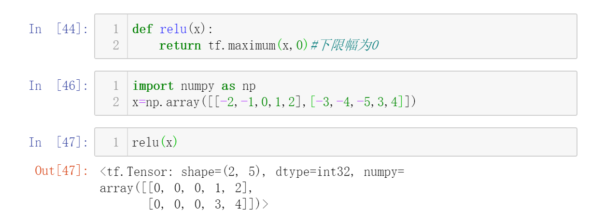

Tensorflow进阶
张量合并
1.拼接

2.堆叠
无论哪种方式，相应维度必须一致
分割
合并的逆过程
将1个张量拆成多个张量
1. split
等份分割
不等份分割
传入列表，表示分割后每一部分的长度
2. unstack

可以看出，stack是在合并张量时增加了维度，而unstack是在分割张量时减少了维度
【注意】unstack一定会将原张量按照axis指定的维度方向分割成全部的部分的长度都是1的张量，因为只有这样才能将shape中为1的维度方向去掉
范数
主要使用L1范数、L2范数和无穷范数
常用统计量
最值：tf.reduce_max、tf.reduce_min
均值：tf.reduce_mean
和：tf.reduce_sum
指定axis

不指定axis
此时会对全局求解：
应用场景
求解所有样本的平均误差：

在分类问题中，求解概率最大值所在下标，即label
假设有两个样本，做10分类问题

使用tf.reduce_max只能求解最大值，而使用tf.argmax可以求解最大值所在索引号（下标）

所以，这两个样本所属类别分别为8和9
张量比较
还是拿10分类的栗子，假设有100个样本
开始比较
计算准确率
对了10个，因此准确率为10%
除了比较相等的 tf.equal(a, b)，还有其它的比较函数，如下
填充（Padding）
使用tf.pad(x,paddings)

之后两者维度一致了，可以做Satck

常用于自然语言处理
在处理图像时，需要在多个维度进行填充，就像这样
上面的图中，对width和height进行了填充，代码如下
这里对width和height的开头和结尾都填充了两个0
图像由28*28变成了32*32
复制
仍旧用tf.tile()函数

[2,3,3,1]的4个元素分别代表了4个维度要复制多少份：
1代表不复制，2代表复制1份，3代表复制2份，以此类推
数据限幅
下限幅： tf.maximum(x, a)
上限幅：tf.minimum(x, a)
应用
实现ReLU函数

实现上下限幅
另外，也可以直接使用tf.clip_by_value实现上下限幅